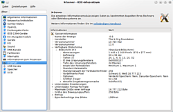
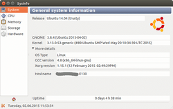
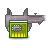

Gerätemanager
Dieser Artikel wurde für die folgenden Ubuntu-Versionen getestet:
Dieser Artikel ist größtenteils für alle Ubuntu-Versionen gültig.
Zum Verständnis dieses Artikels sind folgende Seiten hilfreich:
 Oftmals ist ein Rechner einer schwarzen Box ähnlich: Vom eigentlichen Inhalt hat man keine Ahnung. Um z.B. herauszufinden, was für eine Netzwerkkarte im Rechner verbaut ist, müsste man den Rechner aufschrauben und nachsehen, ob man eine Beschriftung mit der Bezeichnung der Hardware findet. Doch auch ohne Schraubendrehen kann man reichlich Informationen zum Rechner und der verbauten Hardware herausbekommen.
Oftmals ist ein Rechner einer schwarzen Box ähnlich: Vom eigentlichen Inhalt hat man keine Ahnung. Um z.B. herauszufinden, was für eine Netzwerkkarte im Rechner verbaut ist, müsste man den Rechner aufschrauben und nachsehen, ob man eine Beschriftung mit der Bezeichnung der Hardware findet. Doch auch ohne Schraubendrehen kann man reichlich Informationen zum Rechner und der verbauten Hardware herausbekommen.
Einen Sonderfall stellt der sog. restricted-manager dar. Er listet die Hardware auf, für die ein proprietärer unfreier Treiber zur Verfügung steht und zeigt an, ob dieser Treiber verwendet wird.
Grafische Werkzeuge¶

KDE (Infozentrum)¶
KDE beinhaltet ein Werkzeug, um ausführliche Information zur Hardware im Rechner zu erhalten. Das Werkzeug ist bei Kubuntu nicht vorinstalliert, was man aber mit dem folgenden Paket nachholen [1] kann:
kinfocenter (universe)
 mit apturl
mit apturl
Paketliste zum Kopieren:
sudo apt-get install kinfocenter
sudo aptitude install kinfocenter
Danach kann es unter "K-Menü -> Anwendungen -> System -> Infozentrum" aufgerufen werden. Hier finden sich dann Informationen vom Prozessor über optische Laufwerke bis zum XServer.

Sysinfo¶
Benutzt man z.B. Xubuntu oder einen Fenstermanager, so fehlt ein Werkzeug, um Informationen über die Hardware übersichtlich angezeigt zu bekommen. In diesem Fall kann man Sysinfo  installieren, um Hardwareinformationen anzuzeigen. Das Programm kann direkt aus den offiziellen Paketquellen über das Paket installiert werden:
installieren, um Hardwareinformationen anzuzeigen. Das Programm kann direkt aus den offiziellen Paketquellen über das Paket installiert werden:
sysinfo (universe)
mit apturl
Paketliste zum Kopieren:
sudo apt-get install sysinfo
sudo aptitude install sysinfo
Anschließend kann man es bei Ubuntu-Varianten mit einem Anwendungsmenü über "Systemwerkzeuge -> Sysinfo" aufrufen.

HardInfo¶
HardInfo liefert ebenfalls Informationen zur Hardware und zum System und ist insgesamt detailreicher als Sysinfo. Zusätzlich kann ein übersichtlicher Bericht erstellt werden. Bei Lubuntu bereits vorinstalliert.
 die Daten des Prozessors ausgelesen werden können. Das Programm greift dazu auf die Informationen der Systemdateien /proc/cpuinfo, /proc/meminfo und /sys/devices/virtual/dmi/id/ zurück, erreicht aber nicht den Funktionsumfang des Originals.
die Daten des Prozessors ausgelesen werden können. Das Programm greift dazu auf die Informationen der Systemdateien /proc/cpuinfo, /proc/meminfo und /sys/devices/virtual/dmi/id/ zurück, erreicht aber nicht den Funktionsumfang des Originals.Kommandozeilenwerkzeuge¶
lshw¶
lshw zeigt auf der Kommandozeile recht detaillierte Informationen zur Hardware an:
lshw -short
Die Ausgabe lässt sich speichern, in dem man eine Umleitungsfunktion der Shell nutzt:
lshw -short > ~/lshw.txt
hwinfo¶
Möchte man eine noch detaillierte Ausgabe haben, so kann man das folgende Programm installieren [1]:
hwinfo (universe, ab Ubuntu 15.10)
mit apturl
Paketliste zum Kopieren:
sudo apt-get install hwinfo
sudo aptitude install hwinfo
Startet man dieses Programm dann im Terminal [3] mit:
hwinfo
so scannt es die gesamte Hardware und gibt (i.d.R. sehr detaillierte) Informationen aus. Möchte man nur über ein Gerät informiert werden, kann man die Ausgabe einschränken:
# Allgemein hwinfo --GERAET # Beispiel (nur Soundgeräte) hwinfo --sound
Alle Möglichkeiten listet:
hwinfo --help
auf.
inxi¶
inxi ist ein Kommandozeilenprogramm für Systeminformationen, dass u.a. auf dmidecode zurückgreift. Entstanden ist es im Umfeld des IRC (Internet Relay Chat), um bei Rechnerproblemen schnell und gezielt Hardware-Informationen austauschen zu können. Zwei Beispiele:
Basisinformationen:
inxi -b
Vollständige Systeminformationen ohne nutzerspezifische Angaben:
inxi -Fz
PCI bzw. PCMCIA¶
Geräte, die im Rechner über PCI oder in Notebooks über PCMCIA angeschlossen sind, kann man sich über den Befehl lspci ausgeben lassen. lspci ist normalerweise in der Standardinstallation enthalten, kann aber ansonsten über das Paket pciutils installiert werden [1]. Die Ausgabe dieses Befehls kann recht umfangreich sein. Es empfiehlt sich daher, die Ausgabe an das Suchprogramm grep weiterzuleiten. Um nach einer Netzwerkkarte zu suchen, ist der folgende Befehl geeignet:
lspci | grep -i net
Damit erhält man dann eine gefilterte Ausgabe wie
0000:00:0a.0 Ethernet controller: Marvell Technology Group Ltd. Yukon Gigabit Ethernet 10/100/1000Base-T Adapter (rev 13) 0000:00:0c.0 Ethernet controller: Realtek Semiconductor Co., Ltd. RTL-8139/8139C/8139C+ (rev 10)
Weitere geeignete Suchwörter sind "audio", "VGA", "IDE", "SATA", "Communication" (für Modems), "Wireless" (WLAN) oder "1394" (Firewire).
Bei sehr neuer Hardware kann es sinnvoll sein, die für die Ausgabe verantwortliche Datei /usr/share/misc/pci.ids manuell zu erneuern (hierzu sind Root-Rechte erforderlich). Aktuelle Versionen dieser Datei sind beim Linux PCI ID Repository erhältlich.
USB¶
Geräte, die per USB mit dem dem Rechner verbunden sind, kann man über lsusb anzeigen lassen. lsusb ist normalerweise in der Standardinstallation enthalten, kann aber ansonsten über das Paket
usbutils
installiert werden [1].
Die Ausgabe kann z.B. so aussehen:
Bus 005 Device 007: ID 06bd:2061 AGFA-Gevaert NV SnapScan 1212U (?) Bus 005 Device 004: ID 0402:5621 ALi Corp. USB 2.0 Storage Device Bus 005 Device 003: ID 0409:0059 NEC Corp. HighSpeed Hub
Bei sehr neuer Hardware kann es sinnvoll sein, die Datei /usr/share/misc/usb.ids, die für die Ausgabe verantwortlich ist, zu erneuern (hierzu sind ebenfalls Root-Rechte erforderlich). Aktuelle Versionen dieser Datei sind beim Linux USB Project als USB Vendor/Device IDs list  erhältlich.
erhältlich.
Um USB-Anschlüsse von der Kommandozeile aus neu zu starten, ohne das Gerät tatsächlich trennen zu müssen, kann usbreset verwendet werden.
Laufwerke¶
Auch zu Laufwerken lassen sich einige Informationen mit lsblk ausgeben:
lsblk
Reichen diese nicht aus, zeigt der Artikel Systeminformationen ermitteln weitere Möglichkeiten.
/proc und /sys¶
In den Pseudodateien unter /proc und /sys verbergen sich weitere Informationen zum System. Eine kleine willkürliche Auswahl:
/proc/cpuinfo - Informationen zum Prozessor
/proc/asound/cards - Liste der Soundkarten, die mit einem ALSA-Treiber aktiv sind
/proc/scsi/scsi - listet SCSI-Geräte (dazu gehören auch externe und SATA-Laufwerke)
/proc/bus/input/devices - listet Eingabegeräte
/sys/devices/system/cpu/cpu0/cpufreq/* - beinhaltet Informationen und Einstellmöglichkeiten für die Frequenzanpassung des ersten Prozessors
Die Dateien können mit cat gelesen werden, gelegentlich sind Root-Rechte nötig.
sudo cat /proc/ide/hda/settings
liefert z.B.
name value min max mode ---- ----- --- --- ---- acoustic 0 0 254 rw address 1 0 2 rw bios_cyl 16383 0 65535 rw bios_head 255 0 255 rw bios_sect 63 0 63 rw ...
Links¶
Systeminformationen ermitteln - Sammlung von Befehlen für die Kommandozeile
dmidecode - BIOS- und Hersteller-Informationen
Hardware Detection Tool
- kurz HDT; bietet ein bootfähiges ISO-Abbild an, um wesentliche Systeminformationen bereits vor der Installation anzuzeigen
- Erstellt mit Inyoka
-
 2004 – 2017 ubuntuusers.de • Einige Rechte vorbehalten
2004 – 2017 ubuntuusers.de • Einige Rechte vorbehalten
Lizenz • Kontakt • Datenschutz • Impressum • Serverstatus -
Serverhousing gespendet von